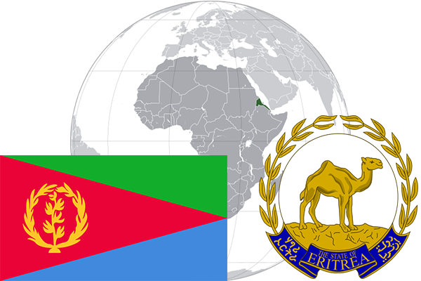

To`liq nomi: Eritreya
Region: Shimoliy-sharqiy Afrika
Qonunchilik shakli: Respublika
Mustaqillik kuni : 24-may 1993 yil (Efiopiyadan)
Poytaxt: Asmara
Maydoni: 121 100 km² (dunyoda 101 -o`rinda )
Chegaradosh davlatlari: Sudan, Jibuti, Efiopiya
Aholisi: 6 086 495 (dunyoda 118 - o`rinda, 2012 -yil roʻyxat)
Aholi zichligi: 43,1 /km²
Aholining o`rtacha yoshi: 59,6 yil ( 61,3 ayollar, 57,9 erkaklar)
Rasmiy tili: Arab, ingliz va italyan tili
Dini: 50% musulmonlar, 50% xristian
Pul birligi: Eritreya nakfasi
Telefon prefiksi: +291
Internet domen: .er
Xalqaro tashkilotlarga a`zoligi: BMT (1993 – yildan),
Dengiz va okeanlarga chiqishi: Qizil dengiz
YIM: Butun: $ 7 810 mln , Jon boshiga: $ 1200 (2015 - yil roʻyxati)
Yirik shaharlari: Asmara